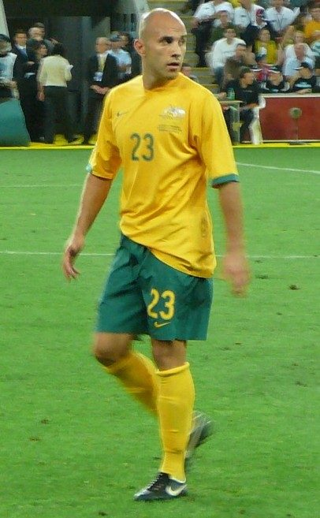

В этот день в 2005 году: Австралия прервала 31-летнее ожидание и вышла на чемпионат мира
«Соккеруз» в драматичной серии пенальти одолели сборную Уругвая на « Stadium Australia» и завоевали путевку на ЧМ-2006.

Конец десятилетиям кубковых разочарований
16 ноября 2005 года мужская сборная Австралии по футболу завершила 31-летнее отсутствие на мировой арене, победив Уругвай в серии пенальти и пробившись на чемпионат мира 2006 года. Ответный матч межконтинентального плей-офф, прошедший при чудовищной поддержке 82 698 зрителей на стадионе «Stadium Australia», принес тот самый прорыв, к которому нация шла более трех десятилетий.
К этой встрече Австралия подходила, уступая в счете 0:1 после первой игры в Монтевидео, состоявшейся четырьмя днями ранее. Под руководством недавно назначенного тренера Гууса Хиддинка (Guus Hiddink), принявшего команду после отставки Фрэнка Фарины (Frank Farina) из-за провального выступления на Кубке конфедераций 2005 года, «соккеруз», занимавшие 49-е место в рейтинге, смогли выровнять положение по сумме двух встреч. Марк Брешиано забил в первом тайме, выведя Австралию вперед в матче — 1:0.

Поскольку по итогам основного и двух безголевых экстра-таймов общий счет остался ничейным (1:1), судьба путевки решалась в серии пенальти. Австралия оказалась точнее, оформив свой первый выход на мундиали с 1974 года.
Хроника упущенных возможностей
До триумфа 2005 года в Сиднее единственным участием Австралии в чемпионатах мира под эгидой ФИФА был турнир 1974 года в ФРГ, где команда, состоявшая преимущественно из любителей, вылетела уже на групповом этапе, не забив ни одного мяча. В последующие четыре десятилетия сборная пережила череду мучительных вылетов в межконтинентальных стыковых матчах.
До встречи с Уругваем австралийцы терпели неудачи в плей-офф против Северной Кореи в 1966 году, Израиля в 1970-м, Шотландии в 1986-м, Аргентины в 1994-м, Ирана в 1998-м и того же Уругвая четырьмя годами ранее в отборе на ЧМ-2002. Победа в 2005-м стала сладким реваншем над «небесно-голубыми», которым Австралия уступила в плей-офф отбора к ЧМ-2002, хотя ранее обыгрывала их со счетом 1:0 в полуфинале Кубка конфедераций 1997 года.

Переход в Азиатскую конфедерацию футбола
Исторический вечер в Сиднее разворачивался на фоне масштабных структурных перемен в австралийском футболе. В начале 2005 года Федерация футбола Австралии взяла курс на выход из Конфедерации футбола Океании, развитие которой исторически тормозилось из-за того, что Океании выделялась лишь одна путевка, требовавшая обязательного прохождения стыковых матчей.
13 марта 2005 года исполнительный комитет Азиатской конфедерации футбола единогласно проголосовал за приглашение Австралии в АФК. После одобрения со стороны Океании и официального утверждения ФИФА 30 июня 2005 года, переход вступил в силу 1 января 2006 года. Победа над Уругваем стала финальной главой эпохи выступлений Австралии в качестве члена Океании, подготовив почву для беспрерывной серии выходов на чемпионаты мира уже через азиатскую зону в последующие годы.